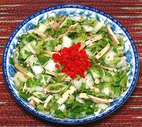

|
Napa Cabbage with Pressed TofuChina - Northeast - Liangban Dougan Baicaixin | ||||
| Serves: Effort: Sched: DoAhead: |
4 salad ** 1 to 5 hrs Best |
An excellent Summer salad, distinctly Chinese, but more like a Western salad than most from China. It violates the rule that the Chinese never eat raw greens, but China is vast and very diverse. | |||
|
14 1 ------- 3-1/3 1 2 3 1/2 1-1/2 ------- 1/4 1 -------- |
oz t --- oz T T t T --- c --- |
Napa Cabbage (1) Sea Salt -- Dressing Pressed Tofu (2) Chili Serrano (3) Sesame Seeds (4) Sesame Oil, dark Sugar Rice Vinegar -- Finish Cilantro Scallion ------------- |
Make - (1 to 5 hrs - 15 min work)
|